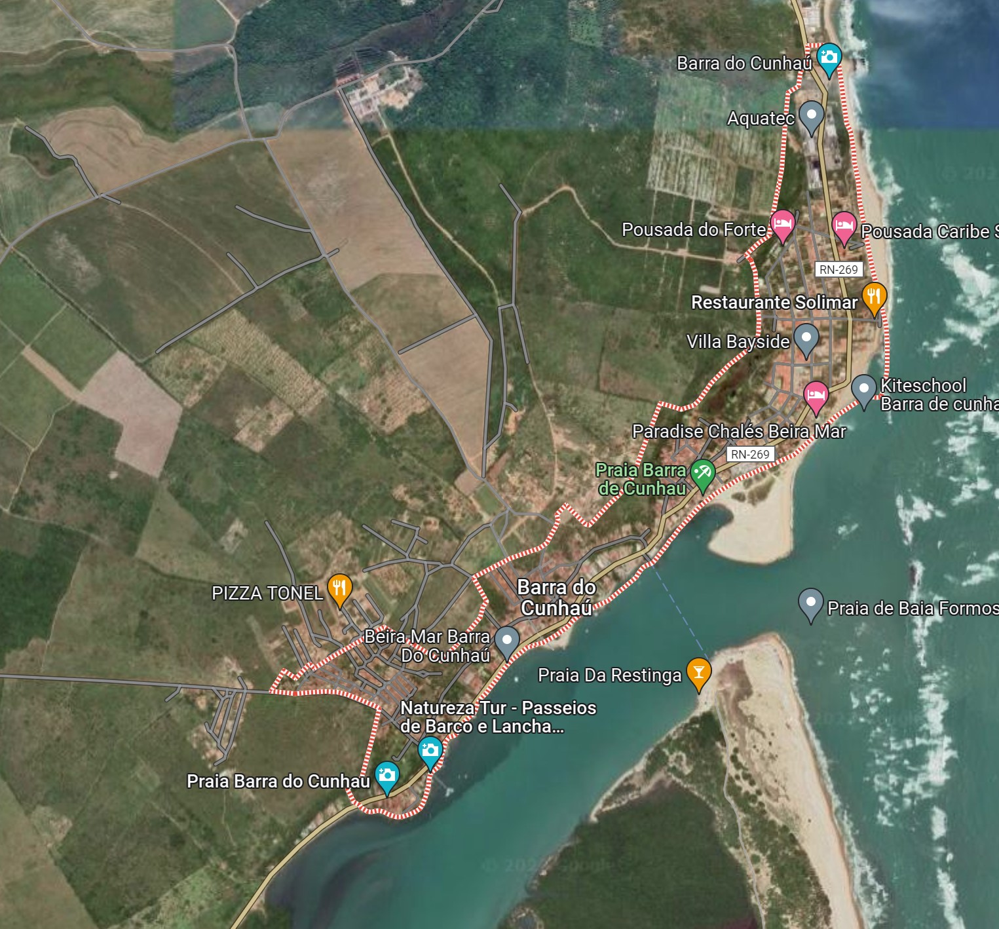
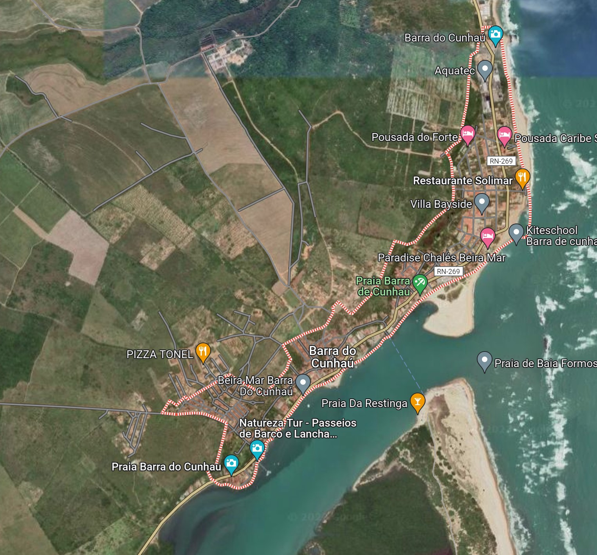

Barra de Cunhaú
Conheça Barra do Cunhaú
Registros fotográficos de Barra do Cunhaú
Onde fica?
Barra de Cunhaú fica localizada a aproximadamente 100km de Natal, situando-se no Município de Canguaretama
⬅ Página Principal
Barra de Cunhaú fica localizada a aproximadamente 100km de Natal, situando-se no Município de Canguaretama
